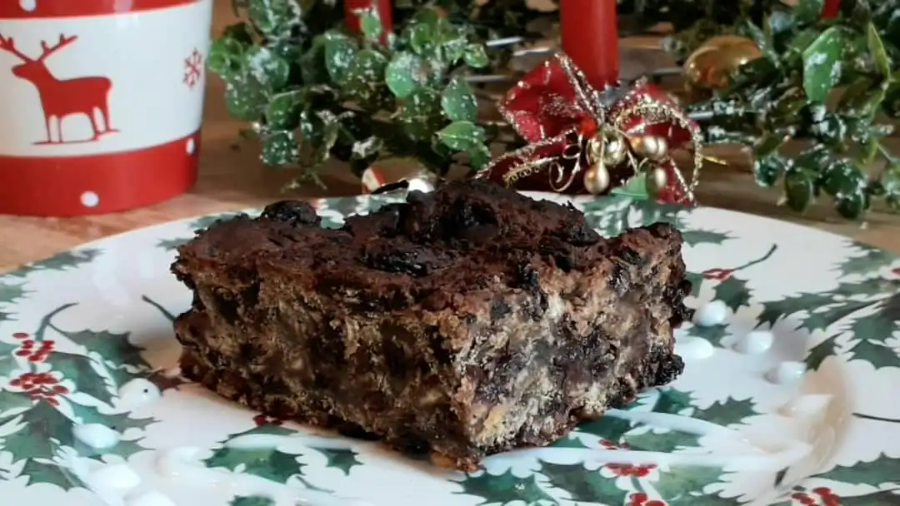

English Christmas Fruit Cake

English Christmas Cake
Ingredients
- 1 kg Mixed dried fruit (raisins, currants, sultanas)
- 250 g Chopped nuts (walnuts, almonds)
- 250 g Butter
- 250 g Brown sugar
- 4 Eggs
- 300 g Plain flour
- 1 tsp Baking powder
- 1 tsp Ground cinnamon
- 1 tsp Ground nutmeg
- 1/2 tsp Ground ginger
- 100 ml Brandy or orange juice
- Zest of 1 lemon
- Zest of 1 orange
- 1 tsp Vanilla extract
- Pinch of salt
Instructions
- Preheat the oven to 150°C (300°F).
- In a large mixing bowl, cream together the butter and brown sugar until light and fluffy.
- Add the eggs one at a time, mixing well after each addition.
- In another bowl, sift together the flour, baking powder, cinnamon, nutmeg, ginger, and salt.
- Gradually add the dry ingredients to the wet mixture, mixing until just combined.
- Fold in the mixed dried fruit, chopped nuts, lemon zest, orange zest, and vanilla extract.
- Pour the batter into a greased and lined cake tin.
- Bake in the preheated oven for about 1.5 to 2 hours, or until a skewer inserted into the center comes out clean.
- Allow the cake to cool in the tin for 10 minutes, then transfer to a wire rack to cool completely.
- Once cooled, brush the top with brandy or orange juice and wrap in parchment paper and foil to store.
- Let the cake mature for at least a week before serving, preferably longer for better flavor.
Notes
This cake can be made weeks in advance and stored in a cool, dry place. It improves in flavor as it matures.
For a richer flavor, you can soak the dried fruit in brandy or orange juice overnight before adding it to the batter.
Decorate the cake with marzipan and royal icing for a traditional Christmas look.
Variations
- For a nut-free version, omit the nuts or substitute with additional dried fruit.
- For a vegan version, substitute the butter with vegan butter and the eggs with flaxseed meal or applesauce.
- For a gluten-free version, use a gluten-free flour blend instead of plain flour.
Serving Suggestions
Serve slices of the fruit cake with a cup of tea or coffee during the holiday season.
It can also be served with a dollop of clotted cream or a scoop of vanilla ice cream for a festive dessert.
Storage Instructions
Store the fruit cake in an airtight container in a cool, dry place. It can last for several weeks to months if properly stored.
For longer storage, you can freeze the cake. Wrap it tightly in plastic wrap and then in aluminum foil before placing it in the freezer. Thaw at room temperature before serving.
Tips
- Use high-quality dried fruits and nuts for the best flavor.
- Ensure the cake is completely cooled before wrapping to prevent moisture buildup.
- Check the cake for doneness by inserting a skewer into the center; it should come out clean when the cake is done.
- If the top of the cake starts to brown too quickly, cover it loosely with aluminum foil during baking.
Home